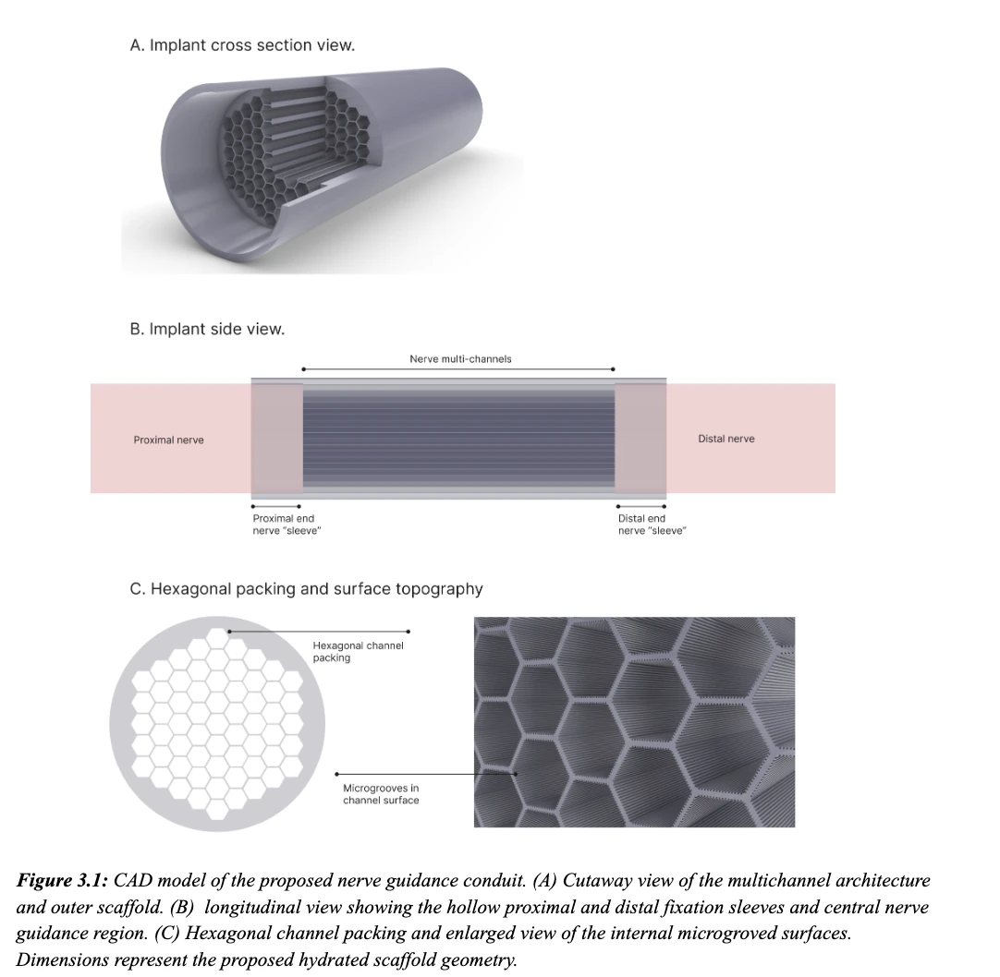
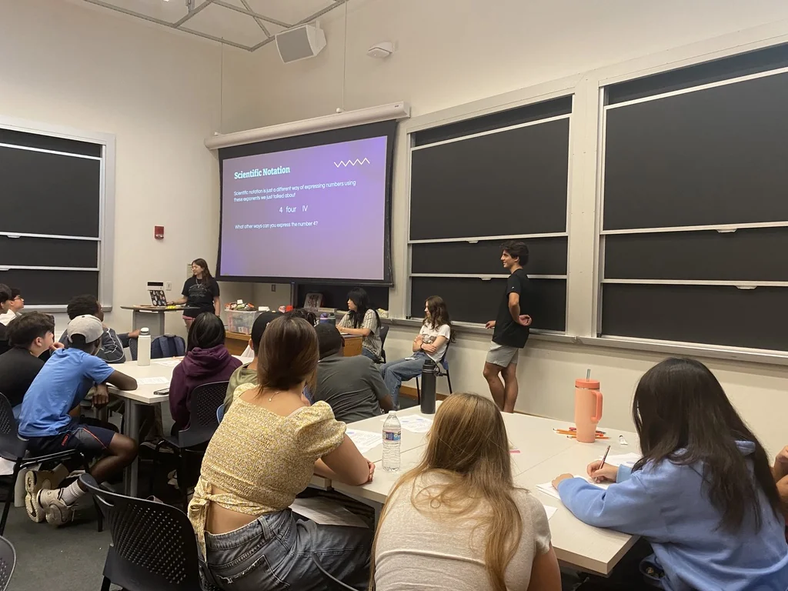

Structural design
Structural designRoll cage structural analysis
Applying load-case analysis and targeted mesh refinement to evaluate the solar car’s structural safety as vehicle mass increases.
Hi, I'm Hannah. I'm studying mechanical engineering at MIT, and I love the process of taking something from an idea to a working physical system. My work spans CAD and machining, structural analysis, materials testing, robotics, and biomechatronics.
I like projects where theory meets the real world: designing a part, making something work, and learning from what the data actually says.
Structural designApplying load-case analysis and targeted mesh refinement to evaluate the solar car’s structural safety as vehicle mass increases.
 Mechanical fabrication
Mechanical fabricationMachining a suspension steering arm from solid aluminum stock while learning the full workflow from setup planning to CNC toolpaths.
 Materials characterization
Materials characterizationDeveloping specimen grips and preparation methods that reduced unusable tensile trials while investigating high-performance fiber combinations.
 Feedback control
Feedback controlUsing PID feedback and MATLAB control-design tools to stabilize a physical robot, then observing how the controller behaves in practice.
 Sensors
SensorsUsing black-versus-white sensor readings and decision thresholds to keep a robot on course through turns and tight corners.
 Structural mechanics
Structural mechanicsUsing a braced lattice architecture to resist compression, then comparing modeling and physical test results.
 Literature research
Literature researchEvaluating Hill-type lumped-parameter muscle models and recommending a baseline for comparison with titin-based research.

Mechanical architectureDeveloping the mechanical scaffold architecture for a four-person team’s concept to bridge traumatic brachial plexus nerve gaps.
I'm pursuing a B.S. in Mechanical Engineering at MIT with a minor in Materials Science and Engineering. Some of my favorite work has involved learning how to manufacture a real part, refining a simulation that wasn't behaving correctly, or figuring out why a material test kept failing.
I'm also genuinely interested in thermal-fluids engineering and have done well in the coursework, even though I haven't yet had the same hands-on exposure there as I have in structures and experimental mechanics. I hope to explore it more in an internship.
Long term, I'm drawn to biomechatronics and engineering technologies that restore lost human function. Outside the lab and machine shop, I teach mechanics and help lead a student-run STEM outreach organization.
SolidWorks, Autodesk Fusion, structural components, CAD/CAM workflows.
ANSYS FEA, load cases, contacts, mesh refinement, MATLAB, Simulink.
Haas CNC milling, manual machining, stock prep, CAM toolpaths.
Instron tensile tests, specimen methods, experimental data analysis, reporting.
Thermal Fluids I & II, Mechanics & Materials I & II, Dynamics & Control I & II, Biomaterials Design.
Through dynaMIT, teaching, Camp Kesem, and community service, I've learned to take ownership of complicated programs and show up for other people. Those experiences matter as much to me as my technical work.
Explore leadership & service
Leadership & service ↗I'm exploring Summer 2027 opportunities in mechanical design, robotics, experimental R&D, thermal engineering, and biomedical technology.